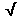
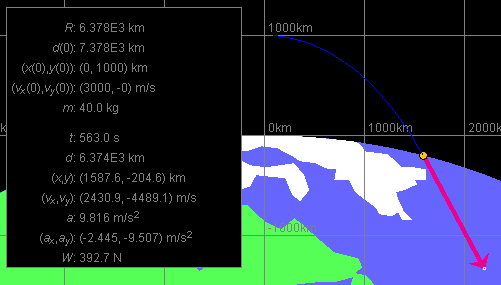

Prerequisites
Students should be familiar with the concept of acceleration and the properties of acceleration in circular motion as summarized below. They should be familiar with Newton's second law and Newton's universal law of gravitation.
Learning Outcomes
Students will develop an understanding of how the gravitational force exerted by the earth on a satellite varies in magnitude in proportion to the inverse square of the distance of the satellite from the center of the earth and how the expression for the gravitational force in combination with Newton's second law of motion can explain both satellite motion (far from the earth) and projectile motion (close to the earth).
Instructions
Students should know how the applet functions, as described in Help and ShowMe.
The applet should be open. The step-by-step instructions in the following text are to be done in the applet. You may need to toggle back and forth between instructions and applet if your screen space is limited.
 Weight at Different Distances from the Earth
Weight at Different Distances from the Earth

A mathematical analysis of the definition of acceleration as time-rate-of-change of velocity shows that in uniform circular motion the acceleration is purely radial in direction and directed to the center of the circle (centripetal) and that the magnitude a of the acceleration is equal toa = dω2 = v2/d
(1)
where d the radius of the circle, and ω and v the angular speed and speed, respectively, of the particle in circular motion.
The sum of all forces1,
,
Any two particles of masses m1 and m2 exert attractive gravitational forces on each other. Particle 1 exerts a force on Particle 2 that is directed towards Particle 1 and, vice versa, Particle 2 exerts a force on Particle 1 that is directed towards Particle 2. Both forces have the same magnitude F equal toF = Gm1m2 / d2
where d is the separation between the two particles and G is the universal gravitaional constant whose value is
G = 6.673×10-11 m3 kg-1 s-2.

Weight at Different
Distances from the Earth
RESET the applet, and set the distance scale to 100 pix = 10,000 km. You may want to display the grid by selecting the Grid button.
Move the satellite to the north pole by setting x and y equal to 0. Display the Data box by selecting the Data button, and note that the weight W of the satellite is shown to be 392.2 N.
Question 1. Is the value W = 392.2 N consistent with the satellite's mass m given as 40 kg in the Data box? Note the value of the magnitude a of the satellite's acceleration which is also provided in the Data box.
Note. The acceleration shown in the Data box applies when the satellite is not resting on the earth and moving subject to the force of gravity only. It is therefore called the acceleration due to gravity. In this Lesson, the magnitude of this acceleration for a point at the surface of the earth is denoted g. Thus, the symbol g denotes a constant in this Lesson. Elsewhere, the symbol g may denote the variable (magnitude of the) acceleration due to gravity at arbitrary points away from the earth.
Answer. The force of gravity is the only force acting on the satellite when the satellite is coasting. (Pretend the satellite is just above the surface of the earth and moving freely.) Then Newton's second law implies
W = m a = 40×9.805 = 392.2 N .
Question 2. What is the satellite's weight at a point one earth radius above the surface of the earth? Consider Newton's law of universal gravitation in obtaining the answer.
To check your answer, position the satellite at x = 0 and y = 6,378 km by entering these values in the Position Data Entry fields and then pressing ENTER. The weight at this point will be shown in the Data box.
Answer. The weight is 98.05 N, which is one fourth of the weight at the surface of the earth. The reason for this reduction by a factor of 4 is as follows.
Newton's law of universal gravitation implies that the magnitude of the force of gravity exerted by the earth on the satellite, i.e., the satellite's weight, is inversely proportional to the square of the distance between the earth and the satellite, where this distance has to be taken from the center of the earth, not from the surface.
When the satellite is moved from the earth's surface, i.e., from a point a distance d = R from the earth's center, to a point one earth radius above the earth's surface, where d = 2R, the distance d from the earth's center is doubled. Therefore the satellite's weight is multiplied by 1/22 = 1/4. For more detail, see Question 4 below.
Comment. Why do we have to take the distance from the center of the earth, not from the surface? The reason is as follows.
Fundamentally, Newton's law of universal gravitation makes a statement only about the forces that two point particles exert on each other. Since the earth is certainly not a point particle, one must calculate the force that this extended object exerts on a satellite by summing all gravitational forces that the individual infinitesimal parts of the earth exert on the satellite. Fortunately, this calculation, which can be done using calculus, has a neat and simple result.
The result is that, at points outside the earth, the gravitational force exerted by the earth on a satellite is identical to what it would be if the earth were a point particle located at the center of the earth with the entire mass of the earth concentrated there. This result can be derived assuming the earth is a perfect sphere and the earth's mass is distributed uniformly inside the earth. We'll make these assumptions.
Question 3. What is the weight of the satellite at a point that is two earth radii above the surface of the earth?
Hint. Try a similar line of reasoning as in Question 2. Then check your answer with the applet.
Question 4 (Challenge). Derive a general expression for the magnitude W of a satellite's weight in terms of
Answer. If M denotes the mass of the earth, then the magnitude of the force of gravity exerted by the earth on the satellite, i.e., the satellite's weight W, at a distance d from the earth's center is given by
W = GMm / d2
.  (5)
(5)
By multiplying Expression (5) by R2/R2 = 1 and rearranging, one can write it in the form
W = [GMm / R2]
(R/d)2 .  (6)
(6)
It turns out that the expression in square brackets is equal to mg. This can be shown as follows.
Let us consider a satellite just above the surface of the earth, so that d = R. The acceleration of such a satellite has the magnitude g, if the only force acting on the satellite is the force of gravity. In this situation, Newton's second law with Expression (5) substituted for the net force acting on the satellite gives the equation
GMm / R2 = m g
. (7)
(7)
With Equ.(7), Expression (6) for W can be simplified to
W = mg
(R/d)2.  (8).
(8).
This expression for W has the desired form.
Exercise 1. Use Expression (8) to rederive the answers to Questions 2 and 3.
Question 5. Reset the applet, and set the scale setting to 100 pix = 10 km. This is the most zoomed-in setting. The satellite will be outside of the bounds of the window. Set x = y = 0 to move the satellite back to the north pole.
Display the force of gravity (green arrow) acting on the satellite (or projectile), and display the Data box. Then drag the satellite around the window with the mouse and observe the changes in the force vector and in the value of the weight W shown in the Data box.
You should find that there is very little change, no noticeable change in the direction of the force and very little change in its magnitude. How do you explain this?
Answer. The explanation is that, at this scale setting, the distance changes that are possible within the window are just tiny fractions of the radius of the earth. Equ.(8) implies that significant changes in the weight occur only when the distance from the surface of the earth changes by amounts comparable to the radius of the earth.
Exercise 2. Set the scale to 100 pix = 1,000 km, and move the satellite to a point one tenth of an earth radius above the surface of the earth or about 600 km above the surface of the earth. Use the applet to determine the decrease of the weight in percent, and derive the value you obtain from Expression (8).
Let us investigate if and how the weight and the acceleration of a satellite change during the satellite's motion.
Exercise 1. RESET the applet. Display the magenta velocity and the green force of gravity vectors. Also display the Data box in order to find out about the satellite's weight W (at the bottom of the list).
Vary the satellite's initial velocity by dragging the tip of the velocity vector. Do you observe any changes in the force of gravity acting on the satellite or the value of the weight shown in the Data box? (Note that, even though the satellite's motion is not simulated until you click PLAY, the vectors and values simulated by the applet are those that apply to an instant while the satellite is moving. Pretend you are looking at a snapshot of the motion.)
Explain your observations in view of Newton's universal law of gravitation. According to this law, does the force of gravity depend on the velocities of the interacting objects?
Exercise 2. Select the Trace and Grid buttons, and PLAY the motion. Observe the force of gravity vector during the motion, as well as the weight in the Data box. Do either of them change?
The answer should be YES. During the motion, the force of gravity is changing direction relative to the fixed x and y axes so that it keeps pointing towards the center of the earth. The magnitude of this force changes as the satellite's elevation changes.
Exercise 3. Check if the satellite's weight depends on the state of motion of the satellite.
REWIND the applet, and then drag the satellite to a given point on its trajectory. Note the satellite's weight at that point. Click REWIND again, and this time PLAY the motion. When the satellite passes the given point, what is its weight? You may want to pause the motion there to read the value of the weight better.
You may also want to find a different orbit for the satellite, with different initial position and velocity, that takes the satellite through the given point, and again observe the satellite's weight at that point.
You should find that the weight, and the force of gravity, depend merely on the satellite's position, not on the satellite's velocity or the orbit it may be maintaining while passing that position. The force of gravity acting on the satellite is determined by the position of the satellite relative to the center of the earth. It does not depend on the satellite's velocity.
Question 1. Is the satellite ever "weightless" in any orbit?
Experiment with different orbits in different scale settings.
Anwer. The satellite is never weightless. The force of gravity acting on the satellite is non-zero as long as the satellite is not infinitely far away from the center of the earth.
Exercise 4. Repeat Exercises 1 to 3, but observe the satellite's acceleration, i.e., the acceleration due to gravity, instead of the force of gravity acting on the satellite. What do you observe?
Answer. Your observations for the acceleration due to gravity should be analogous to those for the fore of gravity: both depend only on the position of the satellite, not the satellite's velocity.
Question 2. A satellite's weight depends on the mass m of the satellite. What about the satellite's acceleration? Can two satellites of different mass that are subject only to the force of gravity have different accelerations?
This is a "theoretical" question, because the applet does not let you vary the mass of the satellite.
Answer. Satellites of different mass that are affected
only by the force of gravity have the same acceleration at the same
point in space. The reason lies in Newton's second law when applied
to the satellite in combination with Newton's universal law of
gravitation. Let denote
the force
of gravity acting on the satellite. Newton's second law gives
for the satellite's acceleration
the equation
=
m .
 (9)
(9)
According to the law of universal gravition, is proportional to
m. So is the right-hand side of Equ.(9). Therefore, the
factor m can be canceled out of the equation, so that does not depend on m.
Thus, the acceleration due to gravity is independent of the mass of a satellite or projectile. This also implies that all objects that are released from rest fall equally fast, an important discovery made by Galileo more than 400 years ago.
Exercise 5. RESET the applet, and switch the scale setting to 100 pix = 10 km. The applet is now set to a distance scale appropriate for observing projectile motion, which is motion near the surface of the earth with trajectories that start and end on the surface of the earth.
Set the initial velocity so that the motion will not go beyond the applet window, PLAY the motion, and observe the acceleration due to gravity.
You should be able to observe that the magnitude of the acceleration due to gravity remains equal to 9.8 m/s2, within two significant digits, and that the variation in this magnitude is very small, even though the projectile can move to elevations of more than 10 km above the surface of the earth.
Also, the direction of the acceleration is very nearly in the y-direction at all times.
In this section, you will investigate what initial conditions are required for a circular orbit.
Exercise 1. RESET the applet, and keep the scale setting at 100 pix = 1,000 km. Display the Grid and the velocity vector. Set the particle's position to 1,000 km above the north pole, i.e., to x = 0 and y = 1,000 km. Set the initial velocity to 0.
What motion would you expect to result from these initial conditions? PLAY the motion and check. Check the Data box to see how much time elapses until the satellite hits the earth.
Comments. You should find that the satellite drops straight down and hits the earth in 512 s.
The explanation, of course, is that the force of gravity and therefore the satellite's acceleration is directed towards the center of the earth. If the initial velocity is zero and all velocity increases are straight down, then the satellite's velocity at all times must be straight down as well.
Exercise 2. The calculation of the time elapsed in Exercise 1 requires calculus because the satellite's acceleration is not constant on the way down. As the Data box shows, the acceleration increases in magnitude from 7.327 m/s2 at the start to 9.805 m/s2 when the satellite reaches the ground.
Nevertheless, the acceleration does not vary by more than 15% and taking a mean value of 8.5 m/s2 and assuming constant acceleration with this mean value should not give too bad a value for the time elapsed. Determine an approximate value for the time elapsed using this approach.
Answer. The distance s traveled in straight-line motion starting from rest with constant acceleration of magnitude a during a time interval of magnitude t is given by
s = (a/2) t2
.  (10)
(10)
Solving for t and substituting the present values gives
t = 
[2s/a] =
[2×1×106/8.5] = 485 s.  (11)
(11)
This value for the time elapsed is only about 5% off the correct value of 512 s.
Exercise 3. REWIND the applet, and set the initial velocity to vx = 3,000 m/s and vy = 0. This velocity is in a direction tangential to the circular orbit through this starting point. If we want the satellite to move in this circular orbit, its velocity at this point would have to have this direction (or the opposite direction).
Select the Trace button, and PLAY the motion. Note down the value shown in the Data box for the time elapsed until the satellite hits the ground.
Comment. The satellite moves in a curved trajectory and hits the ground after 563 s. See Figure 1 below. This is longer than the 512 s for vertical fall.

Figure 1
The explanation for the increase in time is that the earth curves away underneath the satellite as the satellite moves to the right. The force of gravity is still accelerating the satellite in the negative y-direction (but also somewhat in the negative x-direction; note the acceleration vector), but the satellite has to fall farther in the negative y-direction to reach the earth. Thus, more time is required. Also, the y-component of the acceleration is slightly less in magnitude than for the vertical fall in Exercise 1. Why?
Exercise 4. When the satellite is in a circular orbit, the time to complete one revolution ought to be greater than the time until impact for any orbit that ends up at the surface of the earth. To increase the time of flight and have the orbit go beyond the previous one, we need to increase the satellite's initial speed.
Repeatedly clicking REWIND, and gradually increasing the initial speed, to 4,000 m/s, then 5,000 m/s, etc., always maintaining the direction from Exercise 3, obtain a value for the initial speed at which the satellite's orbit is very nearly circular. You may want to change the scale setting to a more zoomed-out view, e.g., 100 pix = 10,000 km, so that the entire earth is in view. At such a setting, the simulation will also require less time to execute.
Comments.
Problem 1. Calculate the exact value of the initial speed that will produce a circular orbit through the point x = 0 and y = 1,000 km.
Answer. Taking magnitudes on both sides of the Newton's-second-law equation (9) and using Expression (8) for the weight W, gives the following equation:
mg (R/d)2 =
ma . (12)
(12)
Canceling a factor of m on both sides, gives an equation for the magnitude a of the satellite's acceleration,
g (R/d)2 =
a . (13)
(13)
In uniform circular motion, a is given by the kinematic expression (1),
a = v2/d . (1)
(1)
Substituting Expression (1) into Equ.(13) gives the following equation involving the speed v:
g (R/d)2 =
v2/d . (14)
(14)
Solving for v2 and substituting the given values, with d = R + 1,000 km = 7.378×106m, gives
 v2
= gd (R/d)2
v2
= gd (R/d)2
 =
9.805×7.378×106×(6.378/7.378)2
= 54,060,241 m2/s2
=
9.805×7.378×106×(6.378/7.378)2
= 54,060,241 m2/s2 (15)
(15)
whence
v = 7,352.6 m/s . (16)
(16)
Check this value with the applet, and also compare it to the approximate value you obtained in Exercise 4.